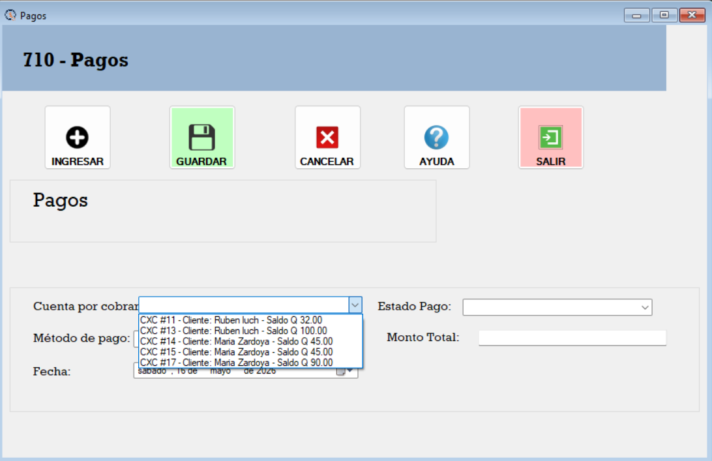
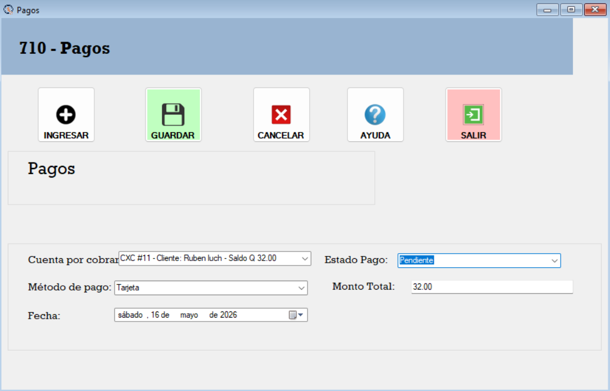
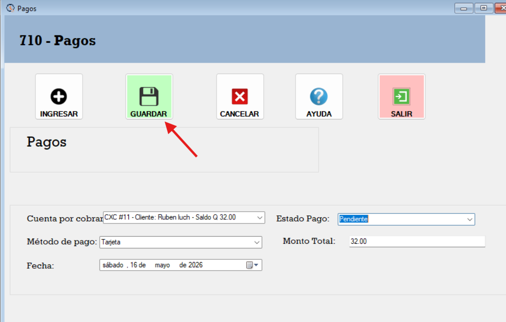

El Formulario de Pagos es una herramienta que permite registrar los pagos realizados por los clientes. A continuación, se describen los pasos para utilizar el formulario:
Se Selecciona una cuenta por cobrar activa si viene desde una venta la cuenta por cobrar se selecciona automaticamente.

al seleccionar la cuenta por cobrar se selecciona se carga el monto total se selecciona el metodo de pago , el estado y la fecha del pago.

Al estar los 3 campos completos, se puede guardar el pago para ser redirigido al metodo de pago correspondiente.
